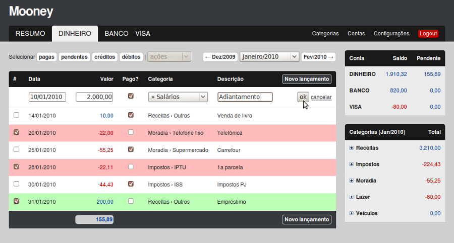

Controle financeiro pessoal simples, rápido e seguro
- Paguei em dinheiro ou no cheque?
- Estou gastando muito no cartão?
- Quanto gastei com meu carro este mês?
- Não tenho paciência para usar uma planilha...
- Legal, mas o que eu ganho com isso?
- Controle de várias contas
- Totalizadores simplificados
- Categorização eficiente
- Interface intuitiva, simples e direta
- Mobilidade, segurança e sigilo absoluto!

1
2
3
4
5
6
7
8
9
10
- Acesso rápido aos lançamentos de cada conta
- Seleção rápida dos lançamentos por valor e situação de contabilização
- Edição e inserção de lançamentos simples e rápida
- Lançamentos não pagos e vencidos são sinalizados em vermelho
- Lançamentos não pagos ainda pendentes são sinalizados em verde
- Totalização dos lançamentos selecionados facilitando análises
- Indicação e edição rápida da situação dos lançamentos
- Navegação rápida entre os lançamentos de cada mês
- Resumo dos saldos atuais de cada conta incluindo a totalização dos valores pendentes
- Totalização dos lançamentos do mês agrupados por categoria e sub-categoria